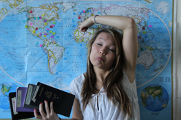
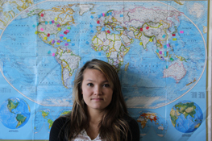
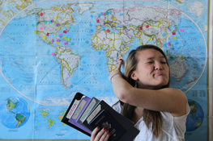

Welcome!
My name is Valerie, and I am a recent graduate of the University of Miami where I studied Visual Journalism and Marketing. I have worked at a number of places in design and marketing both in the US and abroad. I am constantly striving to pursue work that combines my interests in business, design, and travel to improve the world. Before you go exploring, here are a few fun facts about me: I lived on a 1,000 passenger ship for 4 months traveling to 16 different countries in 2014, I have 22 aunts and uncles, and my passion for women's issues has led me to touch nearly 20,000 people globally.


